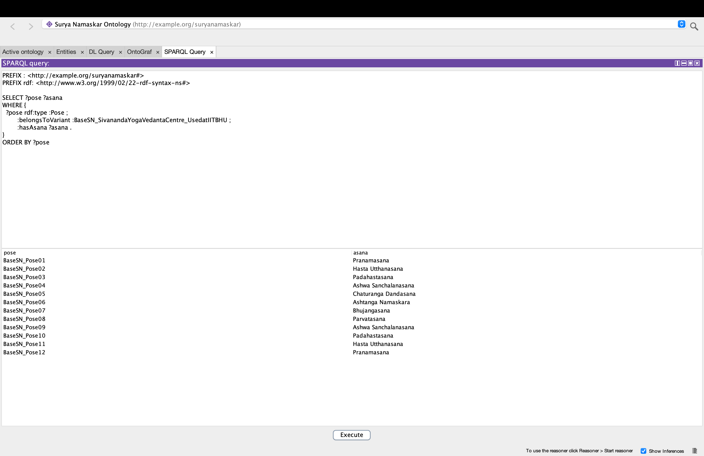
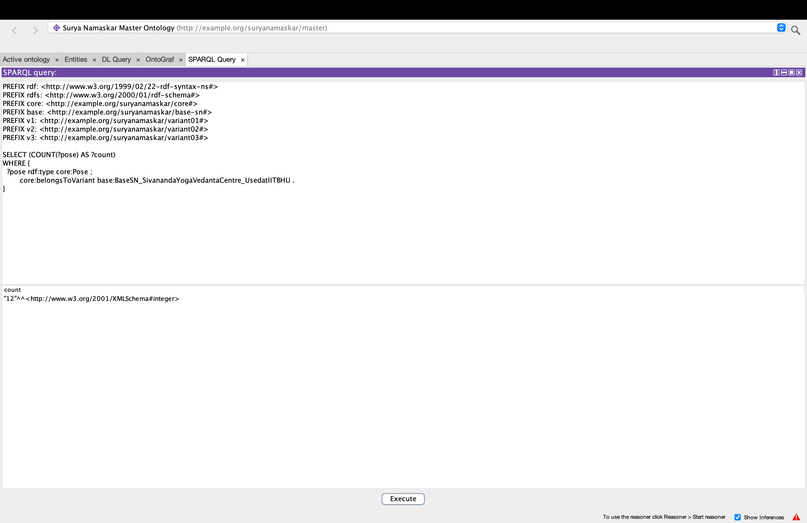
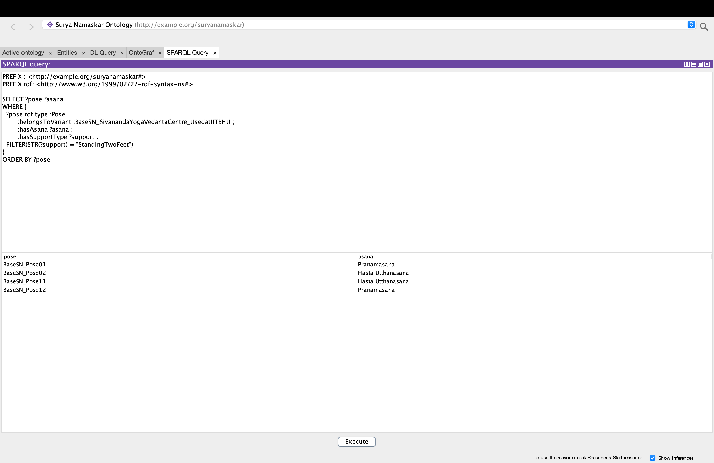
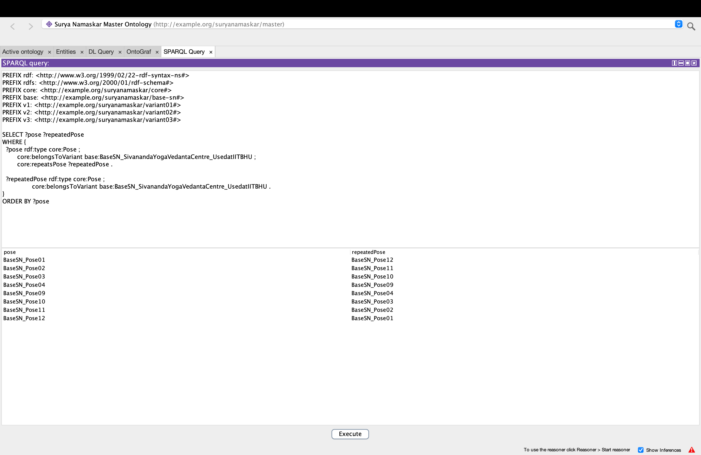
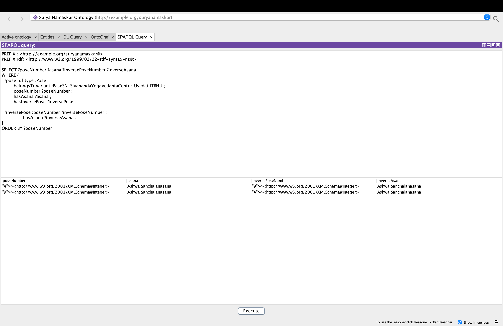
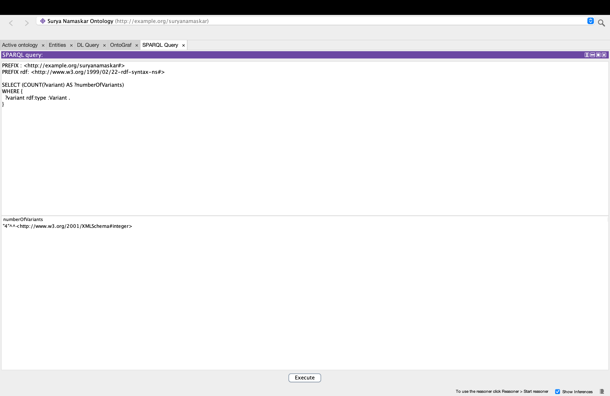
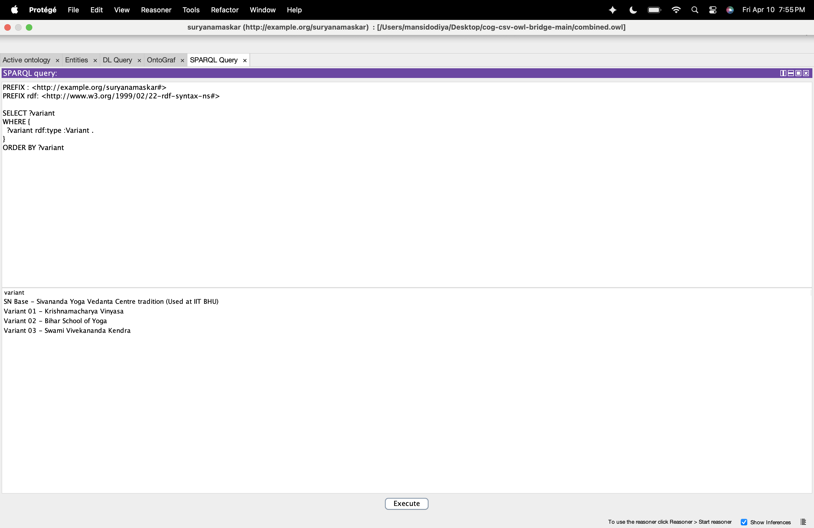
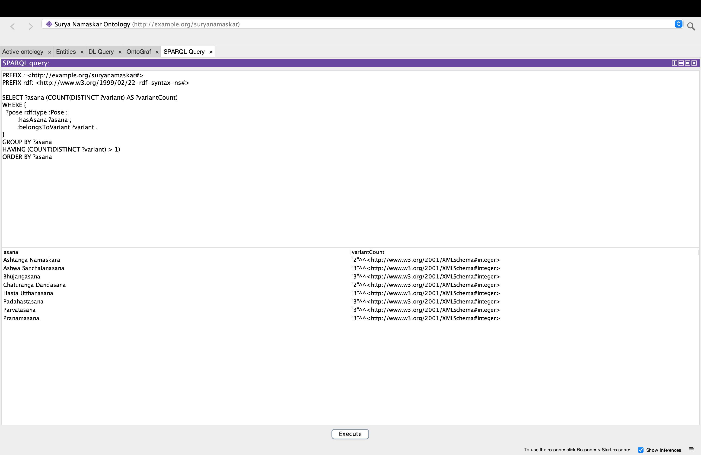
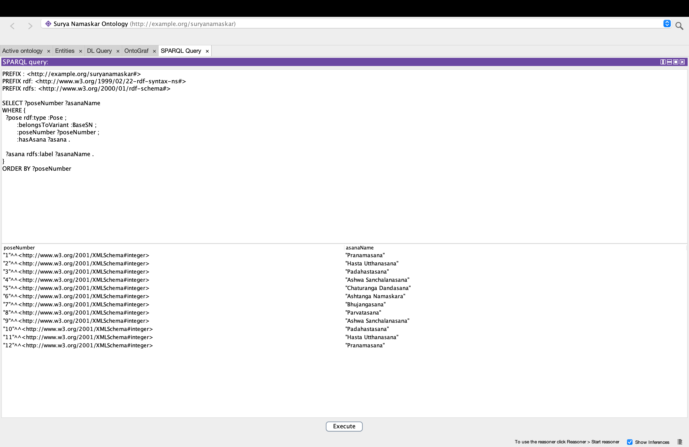
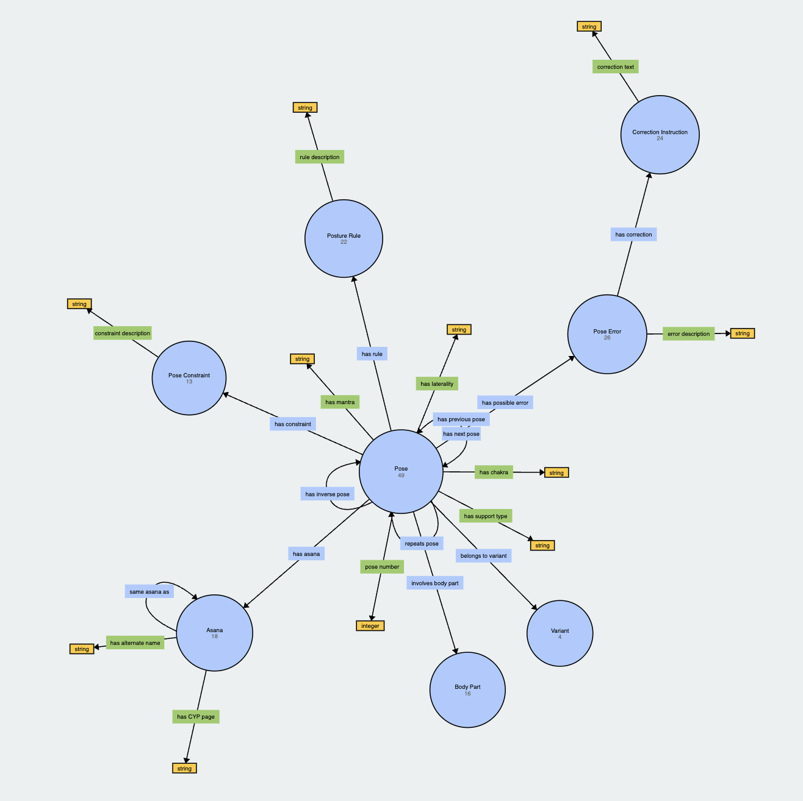

Surya Namaskar Ontology
Semantic Modeling | OWL | SPARQL | Knowledge Representation
This ontology models Surya Namaskar as asanas, numbered pose occurrences, and sequence variants. It supports structured querying of sequence order, repeated poses, inverse relationships, support type, mantra, chakra, and shared asanas across variants.
The ontology is designed to represent multiple Surya Namaskar traditions in a unified structure so that they can be compared and queried systematically.
Ontology Overview
Classes
- Pose – Represents one numbered occurrence of an asana within a Surya Namaskar variant sequence.
- Asana – Represents a yoga asana identity independent of sequence position.
- Variant – Represents a Surya Namaskar tradition or sequence variant.
Object Properties
- hasAsana – Links a pose occurrence to the asana performed at that position.
- belongsToVariant – Links a pose to its Surya Namaskar variant.
- hasNextPose – Links a pose to the next pose in the sequence.
- hasPreviousPose – Links a pose to the previous pose in the sequence.
- repeatsPose – Links repeated or mirrored pose occurrences.
- hasInversePose – Links inverse or opposite pose occurrences.
- sameAsanaAs – Links equivalent or normalized asana identities.
Datatype Properties
- poseNumber – Position of a pose in a variant sequence.
- hasMantra – Mantra associated with a pose.
- hasChakra – Chakra associated with a pose.
- hasSupportType – Support or body-position type for a pose.
- hasLaterality – Indicates laterality such as right, left, or symmetric.
- hasCYPPage – CYP reference page for an asana.
- hasAlternateName – Alternate name of an asana.
Project Files
pyLODE Documentation
Generated ontology documentation for classes, properties, and metadata.
View DocumentationOntology Metadata
Use Cases
- Compare Surya Namaskar variants.
- Identify repeated poses and inverse pose relationships.
- Retrieve the ordered sequence of poses in BaseSN.
- Query poses based on standing posture and support type.
- Retrieve mantra and chakra associated with BaseSN poses.
- Identify asanas shared across multiple variants.
Competency Questions
- C1: What are the poses in Surya Namaskar?
- C2: How many poses are in Base Surya Namaskar?
- C3: Which poses are performed standing?
- C4: Which poses are repeated?
- C5: Which poses have inverse relationships?
- C6: How many variants exist?
- C7: What are the different variants of Surya Namaskar represented in the ontology?
- C8: Which asanas are shared across multiple variants of Surya Namaskar?
- C9: What is the sequence order of poses in BaseSN?
SPARQL Queries
C1: What are the poses in Surya Namaskar?
PREFIX : <http://example.org/suryanamaskar#>
PREFIX rdf: <http://www.w3.org/1999/02/22-rdf-syntax-ns#>
SELECT ?pose ?asana
WHERE {
?pose rdf:type :Pose ;
:belongsToVariant :BaseSN ;
:hasAsana ?asana .
}
ORDER BY ?pose
Answer

C2: How many poses are in Base Surya Namaskar?
PREFIX : <http://example.org/suryanamaskar#>
PREFIX rdf: <http://www.w3.org/1999/02/22-rdf-syntax-ns#>
SELECT (COUNT(?pose) AS ?numberOfPoses)
WHERE {
?pose rdf:type :Pose ;
:belongsToVariant :BaseSN .
}
Answer

C3: Which poses are performed standing?
PREFIX : <http://example.org/suryanamaskar#>
PREFIX rdf: <http://www.w3.org/1999/02/22-rdf-syntax-ns#>
SELECT ?pose ?asana
WHERE {
?pose rdf:type :Pose ;
:belongsToVariant :BaseSN ;
:hasAsana ?asana ;
:hasSupportType ?support .
FILTER(STR(?support) = "StandingTwoFeet")
}
ORDER BY ?pose
Answer

C4: Which poses are repeated?
PREFIX : <http://example.org/suryanamaskar#>
PREFIX rdf: <http://www.w3.org/1999/02/22-rdf-syntax-ns#>
PREFIX rdfs: <http://www.w3.org/2000/01/rdf-schema#>
SELECT ?poseNumber ?asanaName ?repeatedPoseNumber ?repeatedAsanaName
WHERE {
?pose rdf:type :Pose ;
:belongsToVariant :BaseSN ;
:poseNumber ?poseNumber ;
:hasAsana ?asana ;
:repeatsPose ?repeatedPose .
?asana rdfs:label ?asanaName .
?repeatedPose :poseNumber ?repeatedPoseNumber ;
:hasAsana ?repeatedAsana .
?repeatedAsana rdfs:label ?repeatedAsanaName .
}
ORDER BY ?poseNumber
Answer

C5: Which poses have inverse relationships?
PREFIX : <http://example.org/suryanamaskar#>
PREFIX rdf: <http://www.w3.org/1999/02/22-rdf-syntax-ns#>
PREFIX rdfs: <http://www.w3.org/2000/01/rdf-schema#>
SELECT ?poseNumber ?asanaName ?inversePoseNumber ?inverseAsanaName
WHERE {
?pose rdf:type :Pose ;
:belongsToVariant :BaseSN ;
:poseNumber ?poseNumber ;
:hasAsana ?asana ;
:hasInversePose ?inversePose .
?asana rdfs:label ?asanaName .
?inversePose :poseNumber ?inversePoseNumber ;
:hasAsana ?inverseAsana .
?inverseAsana rdfs:label ?inverseAsanaName .
}
ORDER BY ?poseNumber
Answer

C6: How many variants exist?
PREFIX : <http://example.org/suryanamaskar#>
PREFIX rdf: <http://www.w3.org/1999/02/22-rdf-syntax-ns#>
SELECT (COUNT(?variant) AS ?numberOfVariants)
WHERE {
?variant rdf:type :Variant .
}
Answer

C7: What are the different variants of Surya Namaskar represented in the ontology?
PREFIX : <http://example.org/suryanamaskar#>
PREFIX rdf: <http://www.w3.org/1999/02/22-rdf-syntax-ns#>
SELECT ?variant
WHERE {
?variant rdf:type :Variant .
}
ORDER BY ?variant
Answer

C8: Which asanas are shared across multiple variants of Surya Namaskar?
PREFIX : <http://example.org/suryanamaskar#>
PREFIX rdf: <http://www.w3.org/1999/02/22-rdf-syntax-ns#>
PREFIX rdfs: <http://www.w3.org/2000/01/rdf-schema#>
SELECT ?asanaName
WHERE {
?pose rdf:type :Pose ;
:hasAsana ?asana ;
:belongsToVariant ?variant .
?asana rdfs:label ?asanaName .
}
GROUP BY ?asana ?asanaName
HAVING (COUNT(DISTINCT ?variant) > 1)
ORDER BY ?asanaName
Answer

C9: What is the sequence order of poses in BaseSN?
PREFIX : <http://example.org/suryanamaskar#>
PREFIX rdf: <http://www.w3.org/1999/02/22-rdf-syntax-ns#>
PREFIX rdfs: <http://www.w3.org/2000/01/rdf-schema#>
SELECT ?poseNumber ?asanaName
WHERE {
?pose rdf:type :Pose ;
:belongsToVariant :BaseSN ;
:poseNumber ?poseNumber ;
:hasAsana ?asana .
?asana rdfs:label ?asanaName .
}
ORDER BY ?poseNumber
Answer

Visual Resources
Ontology Diagram

WebVOWL Visualization

Contributors
Mansi Dodiya1, Kishan Kumar1, Biplav Srivastava2, Hari Prabhat Gupta1